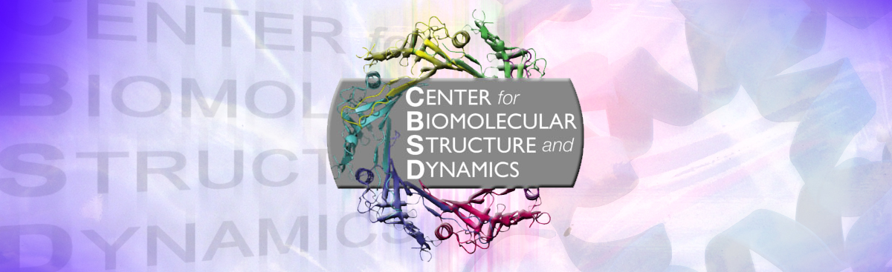

MS: ✗
BD: ✗
Organizations/ Facilities
The Alberta RNA Research and Training Institute (ARRTI), established in December 2011, is the first RNA focused research centre in the province and uses mainly biophysical and engineering approaches in the study of structure and function of RNA based cellular systems.
Visit the ARRTI website here.
Director: Tony Russel, PhD
Associate Director: Stacey Wetmore, PhD
AUC Solutions, Inc was founded in 2015 to support AUC users worldwide. Our company provides expertise in experimental design, data analysis, analytical software, high-performance computing solutions for AUC analysis, and high-throughput analysis.
Vist the AUC Solutions website here.
President and CEO: Borries Demeler, PhD
Software and Systems: Gary Gorbet
Product Development: Aaron Householder
Marketing: Mike Troy

We at the Center for Biomolecular Structure and Dynamics (CBSD) apply the methods and concepts of biophysics, structural biology and mathematics to understand the mechanistic basis of biological processes in health and disease.
The purpose of the BioSpectroscopy Core Research Laboratory (BCRL) is to offer a centralized, shared resource for time-resolved fluorescence spectroscopy, single-molecule spectroscopy and fluorescence imaging that provides access to instruments, technologies, and services, as well as expert consultation.
Visit the CBSD website here.
Visit the BCRL website here.
Director: Bruce Bowler
Associate Director: Steve Sprang
The Canadian Center for Hydrodynamics is located at the University of Lethbridge, Alberta, Canada. The CCH provides solution characterization services including experimental design, protocol development, data analysis and report preparation for manuscripts, grant applications and FDA applications for analytical ultracentrifugation experiments.
Visit the CCH website here.
Principle Investigator: Borries Demeler, PhD
Research Director: Amy Henrickson, PhD Candidate
The University of Idaho Mass Spectrometry Core Facility is equipped with mass spectrometers with complimentary capabilities for the analysis of various volatile and non-volatile organic compounds and biochemicals.
Visit the MSCL website here.
The Northwest Biophysics Consortium (NBC) represents a group of investigators located in the northwest region of the US and Canda that has special interest in biophysical research.
Visit the NBC website here.
Facilities that are a part of the NBC include: the Canadian Center for Hydrodynamics, the BioSpectroscopy Core Research Laboratory, the Center for Biomolecular Structure and Dynamics, and the Mass Spectrosmetry Core Laboratory.
**

The Extreme Science and Engineering Discovery Environment (XSEDE) is a single virtual system that scientists can use to interactively share computing resources, data and expertise. People around the world use these resources and services- things like supercomputers, collections of data and new tools- to improve our planet.
Visit the XSEDE website here.
Principle Investigator: John Towns
MIT Biophy Inst Fac. Barbara Imperiodi
NCMH- UK
BITC
NAUC, Storrs, CT
AUC. Jack Correia
Technology
BioSensor Tools (David Myszha)
Nanolytics
Nanolytic Instruments
Spin Analytical
Beckman Coulter
Software
DCDT+ is a Windows program for analysis of sedimentation velocity (SV) data and implements fitting of the derived g(s*) distributions as a mixture containing of up to 5 discrete (non-interacting) species.
Developer(s): Walter Stafford; John Philo
System Requirements: Window XP, Vista, 7,8, or 10. Requires Microsoft .NET framework.
Registration: DCDT+ is distibuted as 'freeware' and does not require registration.
Download: link
User Manual: pdf
Stafford, W.F., III. 1992. Boundary analysis in sedimentation transport experiments: A procedure for obtaining sedimentation coefficient distributions using the time derivative of the concentration profile. Analytical Biochemistry 203:295-301.
Philo, J.S. (2000) A method for directly fitting the time derivative of sedimentation velocity data and an alternative algorithm for calculating sedimentation coefficient distribution functions. Analytical Biochemistry, 279, 151-163.
Philo, J. S. (2006). Improved methods for fitting sedimentation coefficient distributions derived by time-derivative techniques. Anal. Biochem. 354, 238-246.
Philo, J. S. (2011). Limiting the sedimentation coefficient range for sedimentation velocity data analysis: Partial boundary modeling and g(s*) approaches revisited. Anal. Biochem. 412, 189-202.
The kDalton program directly fits sedimentation equilibrium (SE) scans using non-linear least-squares analysis, providing global analysis of multiple loading concentrations and/or rotor speeds (up to 18 total data sets). It can analyze ideal or non-ideal self-association (with up to 2 different oligomers), and also provides 15 assembly models for mixed associations (hetero-association).
Developer: John Philo
System Requirements: Windows XP, Vista, 7, 8, or 10.
Download: link
Philo, J. S. (2000). Sedimentation equilibrium analysis of mixed associations using numerical constraints to impose mass or signal conservation. Methods Enzymol. 321, 100-120.
LAMM
Discrete species: numerical lamm solution
SEDANAL
Global analysis of interacting species. Molecular weight anaysis.
c(s). Discret species: approximate Lamm solution. discret species: numerical lamm solution. Realtime isplay and analysis.
For the analysis of sedimentation velocity, dynamic light scattering, and sedimentation equilibrium data. SEDFIT has a variety of models for the analysis with discrete species and size-distributions, including ls-g*(s), c(s), c(M), and c(s, ff0), and their specialized variants.
Developer: Peter Schuck
System Requirements: Windows NT, 95, 98, XP, 2000, Vista, 7, 8
The SEDNTERP program is a general purpose tool for the interpretation of sedimentation equilibrium, sedimentation velocity, and diffusion experiments.
Developer: John Philo
Download: link
SEDPHAT provides global modeling capabilities for both sedimentation equilibrium and sedimentation velocity data, serving as a platform for the global analysis of a variety of iotherms from different biophysical disciplines.
Developer: Peter Schuck
System Requirements: Windows NT, 95, 98, 2000, XP, or later
Download: link
SEDVIEW
Realtime display and analysis.
SVEDBERG is a Windows program for whole-boundary analysis of sedimentation velocity data. It fits directly to the raw scans (usually spanning the entire run) to derive the sedimentation coefficient and molar mass (or, if you prefer, sedimentation coefficient and diffusion coefficient) for up to 6 independent species (mixtures of up to 6 components).
Developer: John Philo
System Requirements: Windows XP, Vista, 7, 8, 10. Requires Microsoft .NET framework.
Registration: SVEDBERG is distributed as 'freeware' and does not require registration.
Download: link
Philo, J. S. (1997). An improved function for fitting sedimentation velocity data for low-molecular-weight solutes. Biophys. J. 72, 435-444.
ULTRASCAN
Main Use: van Holde-Weischet. Discrete species: numerical lamm solution. nonlinear least squares. molecular weight moment analysis. data aquisition. realtime display and analysis. graphics. calculations.
Developer: Borries Demeler
System Requirements:
Registration:
Download: link
XLGraph is a general purpose plotting tool for AUC scan data, a utility to transform the raw data plots to help visualize and interpret AUC experiments, and a utility for performing certain mathematical operations on raw AUC scans and then writing out the resultant data as new scan files.
Developer: John Philo
System Requirements: Windows XP, Vista, 7, 8, or 10.
Download: link